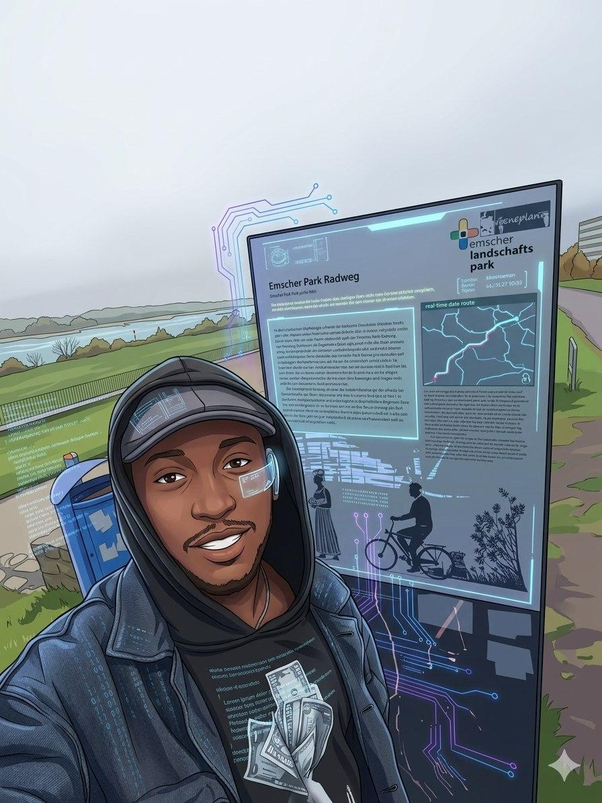
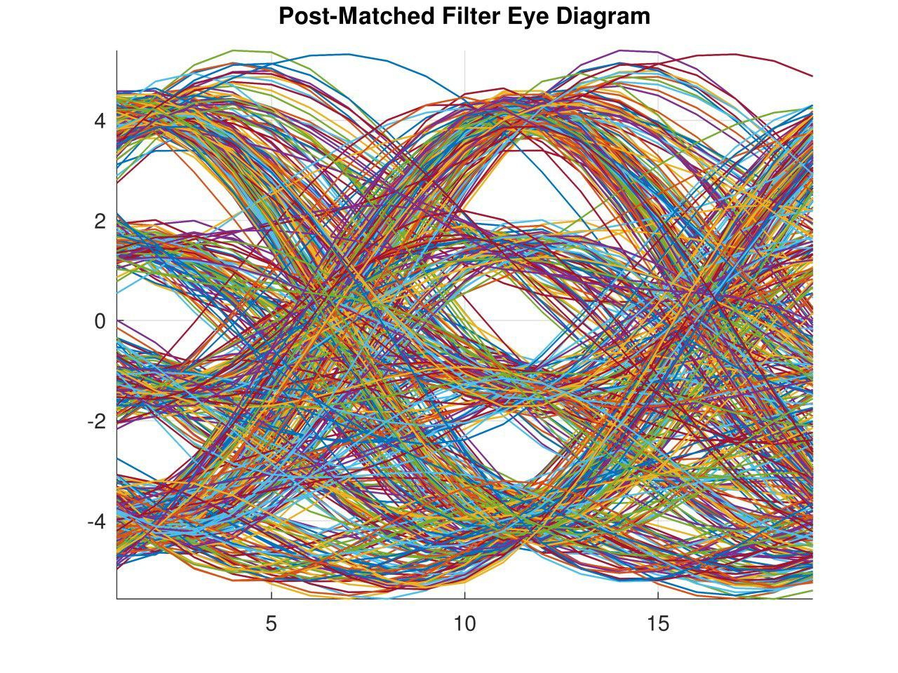
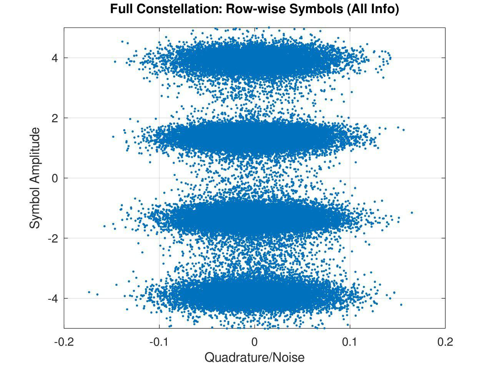
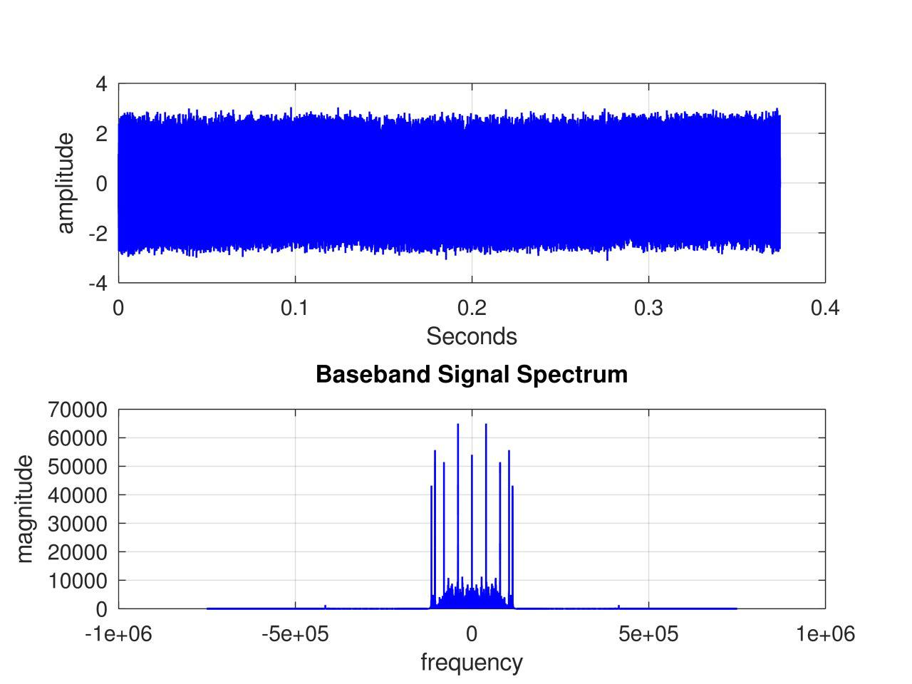

● Available for internships & Hiwi roles
Engineering student at Hochschule Rhein-Waal building systems from the ground up — from custom MIPS processors to RF receivers and IoT firmware.

I'm a Sustainability Engineering student at Hochschule Rhein-Waal, with a foundational degree in Communication & Information Engineering. I build systems that operate close to the metal — firmware, digital logic, and signal processing.
My background spans embedded C/C++, SystemVerilog, FPGA design, and DSP, with hands-on projects ranging from a custom-designed MIPS microprocessor to an SDR radio receiver built in MATLAB.
I'm particularly interested in applying low-level engineering skills toward energy-efficient and sustainable technology — where hardware constraints and environmental responsibility intersect.
Based in Duisburg, Germany. Fluent in French, English (C1), and German (B2).
RTL design, simulation, synthesis, and deployment using Vivado on Digilent boards.
Bare-metal programming, driver development, and RTOS on multiple MCU families.
Analog & digital signal processing, RF frontend design, and SDR implementation.
IoT development, data acquisition, Linux environments, and version control workflows.



I'm currently open to working student, Hiwi positions, and interesting collaborations in embedded systems, FPGA design, or sustainable hardware.
Feel free to reach out directly at
billytadouanla45@gmail.com
Based in Duisburg, Germany — open to remote and on-site opportunities.